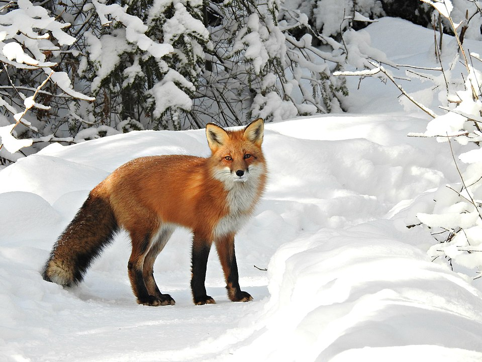

Welcome to the animal photo gallery! Here, you will find pictures of my favorite animals.
This is a grizzly bear, a large subspecies of brown bear found in North America.
You can learn more about grizzly bears here.

This is a red fox, a small, slender canid known for its rusty-red fur, bushy white-tipped tail, and black "stocking" legs.
You can learn more about red foxes here.